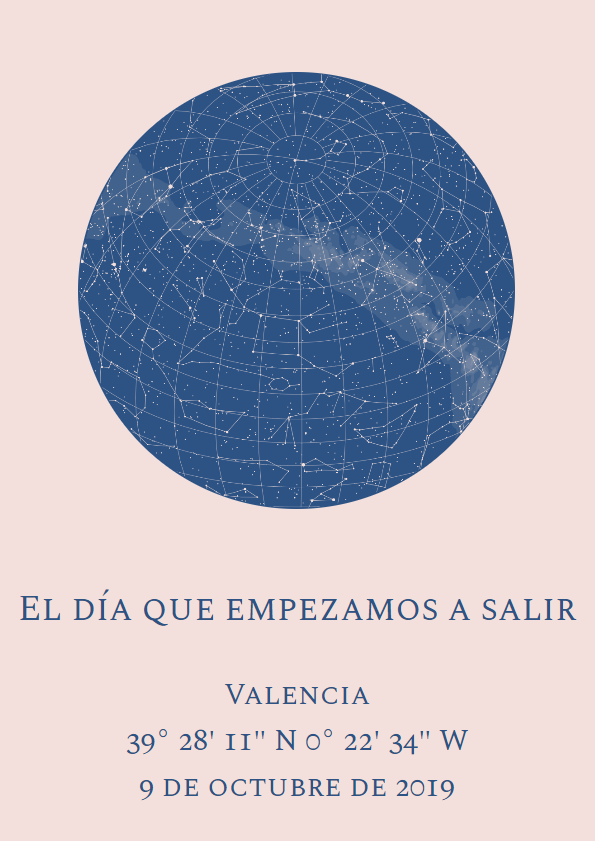
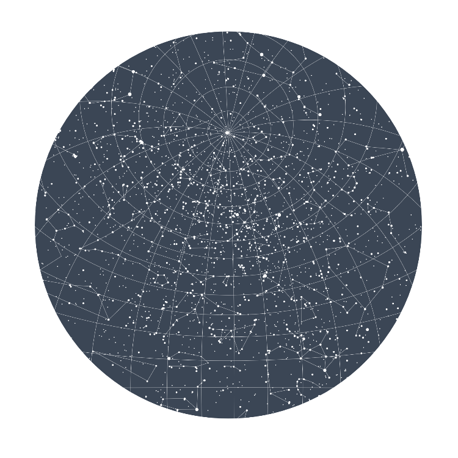

1. 10 Puzzles de Shrek
¡Porque nunca hay suficientes puzzles de Shrek! No hace falta que los hagas todos ahora, puedes volver a esta web siempre que quieras.
2. Un par de canales de divulagción de Youtube
A lo mejor ya los conoces pero según internet son los mejores, ¡para que no pierdas el ritmo en la cuarentena! Haz click en la imagen para ir directamente al canal.
Derivando
El robot de Platon
Instituto de Fisica Teorica IFT
Mathologer
Numberphile
QuantumFracture
SciShow Space
Star Tres
Up and Atom
Vsauce
3. El cielo la noche que empezamos a salir
Siento que sea tan pequeño y de tan mala calidad pero me hacía mucha ilusión que lo tuvieras y el pdf era algo caro así que bueno lo que toca con mi presupesto de mierda.


🚧 EN OBRAS 🚧
4. Carpeta compartida de drive
No me ha dado tiempo a hacerla porque he estado perdiendo mucho el tiempo no tengo excusa lo sé pero bueno la voy a dejar aquí porque igualmente puedo ir subiendo cosillas que te pueden gustar. Haz click en el gif.